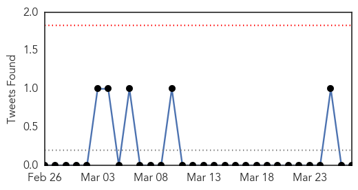
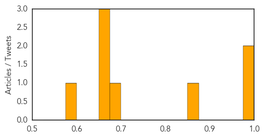
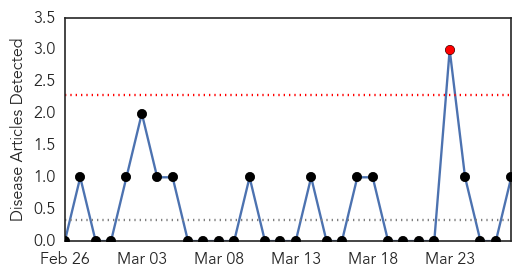
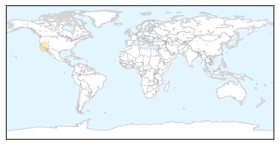

Cholera
30-Day Web Trend
0 alerts, 0 warnings

30-Day Twitter Trend
0 alerts, 0 warnings

Article Locations
Article Confidences
Top Articles:
- 0.995
- 2 more cholera cases in Chiredzi
- 0.995
- Zimbabwe on alert over cholera threat
- 0.863
- WHO Boosts Mulago Rotavirus Diarrhea Research
- 0.681
- Millions Face Health Crisis in Syria
- 0.671
- Millions Face Health Crisis in Syria
- 0.671
- Millions Face Health Crisis in Syria
- 0.666
- Millions Face Health Crisis in Syria
- 0.581
- Sharing water with animals- the Atebubu story
Top Tweets:
-
No tweets found for Mar 27, 2015
West Nile Virus
30-Day Web Trend
1 alerts, 0 warnings

30-Day Twitter Trend
1 alerts, 0 warnings

Article Locations
Article Confidences

Top Articles:
Top Tweets:
-
No tweets found for Mar 27, 2015